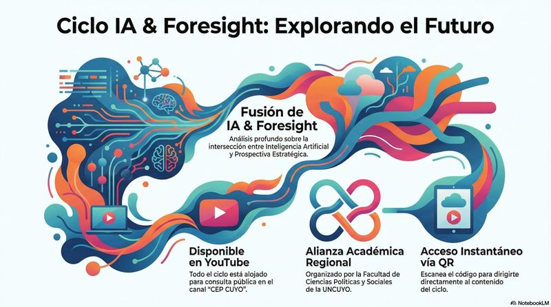
MasterclassCiclo IA & Foresight: Explorando el Futuro
Análisis profundo sobre la intersección entre inteligencia artificial y prospectiva estratégica.
2026Ver más
El Think Tank del futuro líder en investigación estratégica y análisis prospectivo en la región de Cuyo.
Contenido académico propio en cuatro modalidades, del formato ágil al programa de especialización.
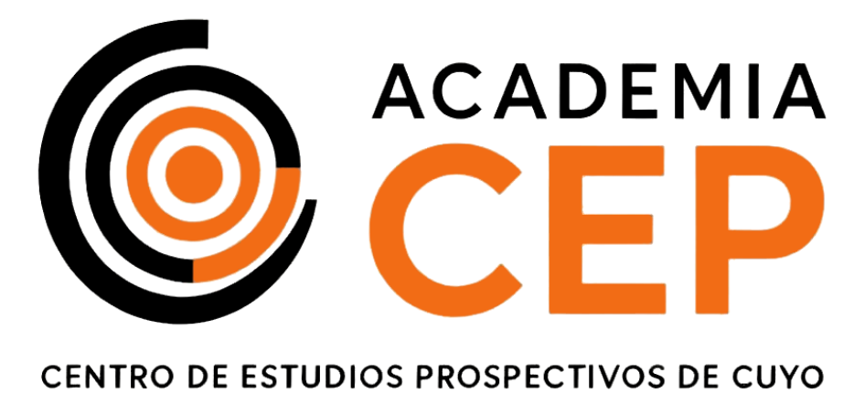

MasterclassAnálisis profundo sobre la intersección entre inteligencia artificial y prospectiva estratégica.
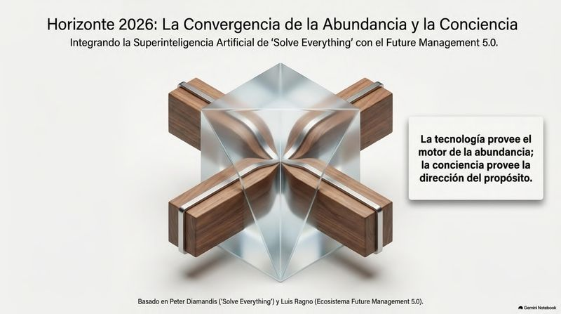
MasterclassLa convergencia de la superinteligencia artificial con el marco Future Management 5.0.
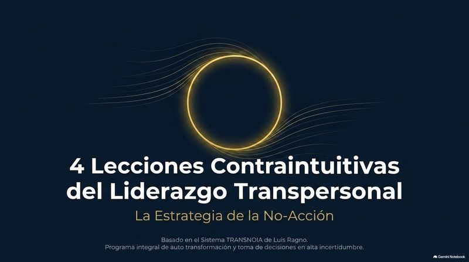
MasterclassLa estrategia de la no-acción, basada en el sistema Trances40 de Luis Ragno.
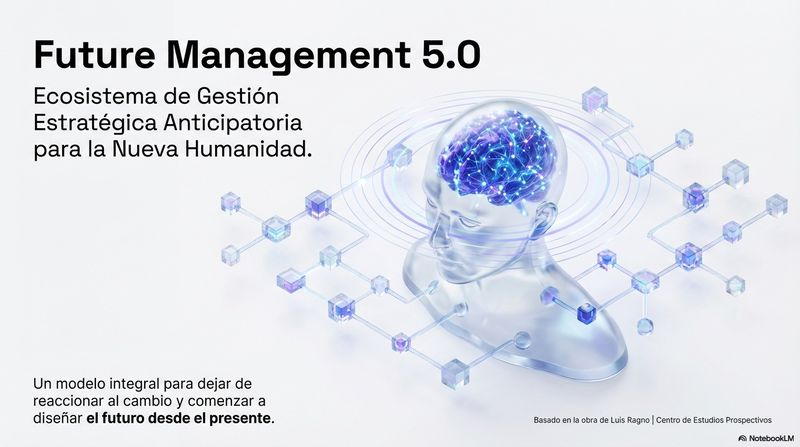
MasterclassEcosistema de gestión estratégica anticipatoria para la nueva humanidad.
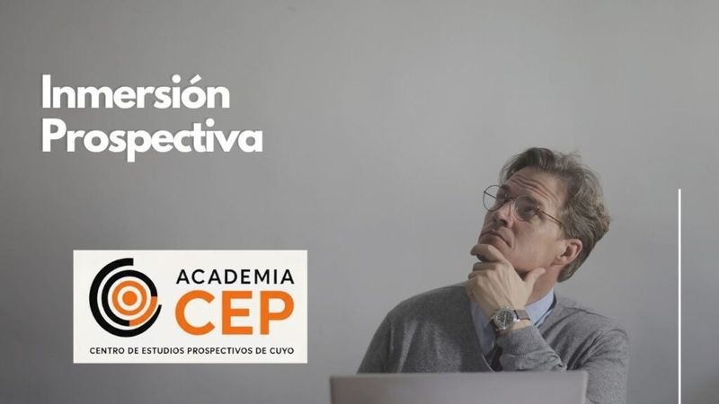
TallerSeminario-taller intensivo de introducción práctica a los estudios de futuros.
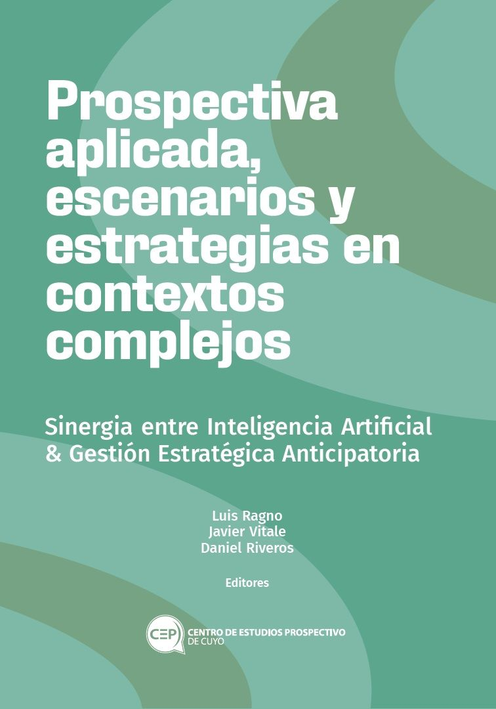
TallerSinergia entre inteligencia artificial y gestión estratégica anticipatoria.
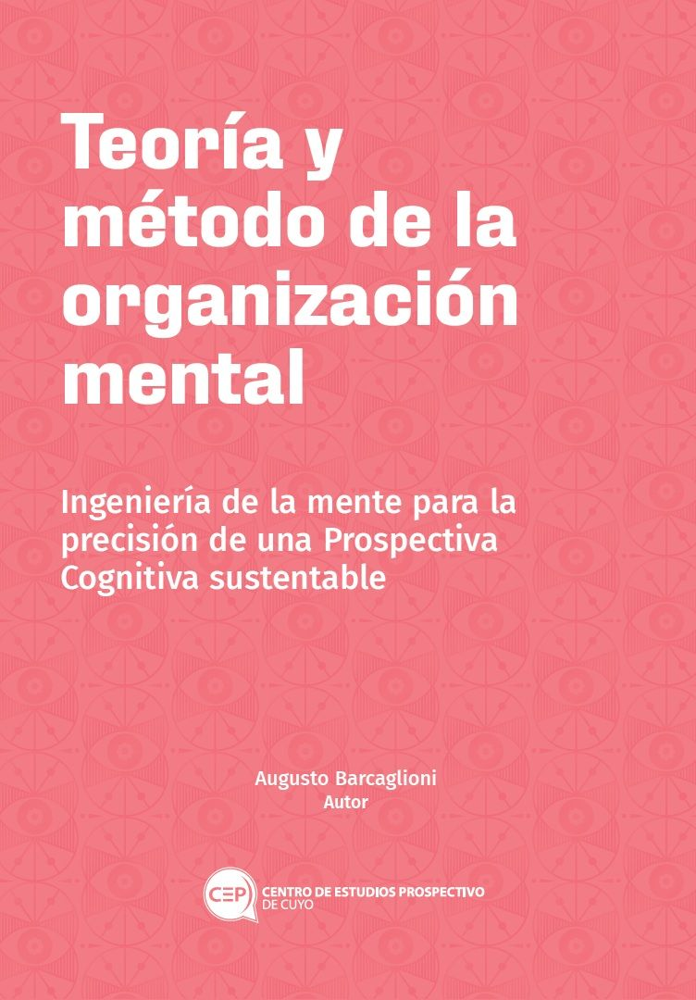
TallerIngeniería de la mente para la práctica de una prospectiva cognitiva sustentable.
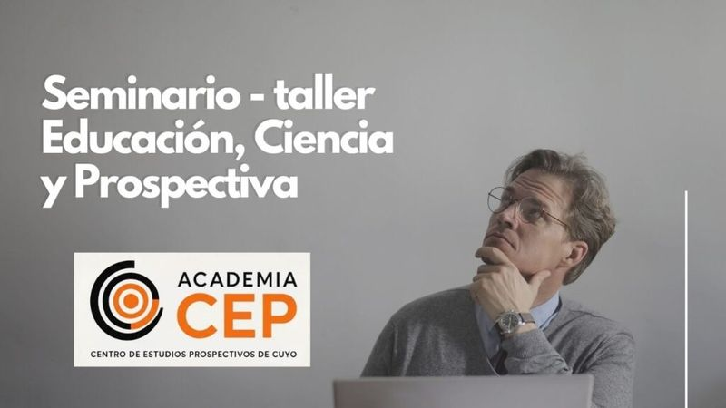
TallerSeminario-taller sobre el rol de la prospectiva en la ciencia y la educación.
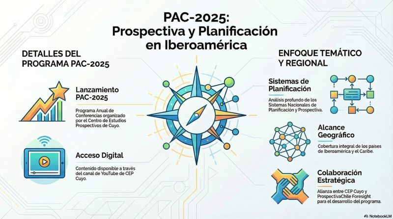
DiplomadoPrograma de análisis y planificación con enfoque temático y regional.
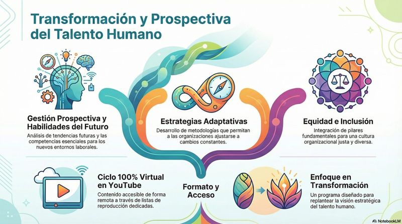
DiplomadoGestión prospectiva y habilidades del futuro para las organizaciones.
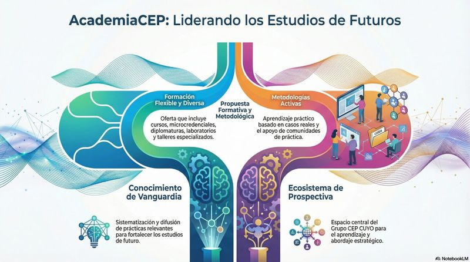
DiplomadoFormación integral en metodologías y prácticas relevantes para el liderazgo prospectivo.
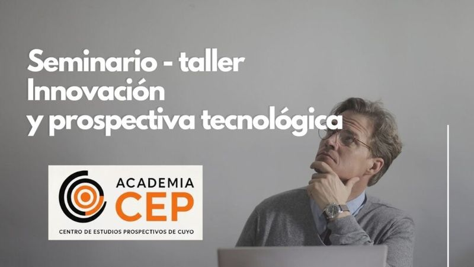
DiplomadoSeminario-taller sobre vigilancia tecnológica e innovación estratégica.
Itinerario modular sobre gestión estratégica anticipatoria y liderazgo de futuros.
Módulos sobre inteligencia artificial aplicada al análisis de tendencias y escenarios.
Módulos de prospectiva territorial y bioeconomía aplicada a la gestión regional.
Módulos sobre liderazgo, cognición y toma de decisiones en entornos de incertidumbre.
Jóvenes, inteligencia artificial y trabajo, foros ágiles y un feed social que traduce la prospectiva a un lenguaje cercano.
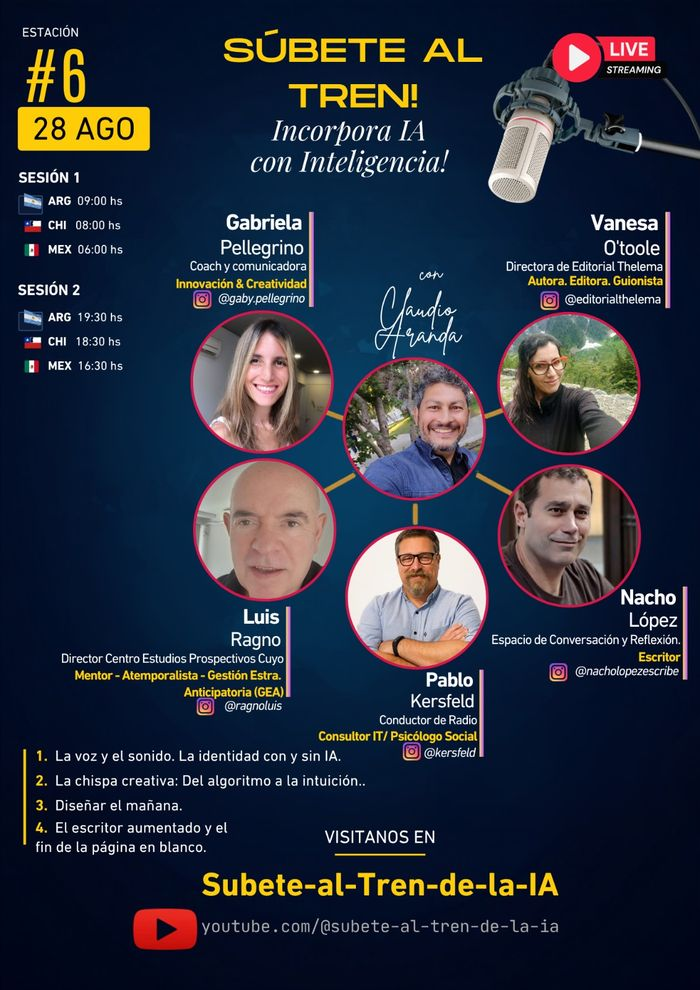
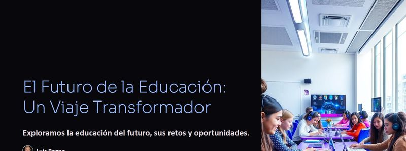
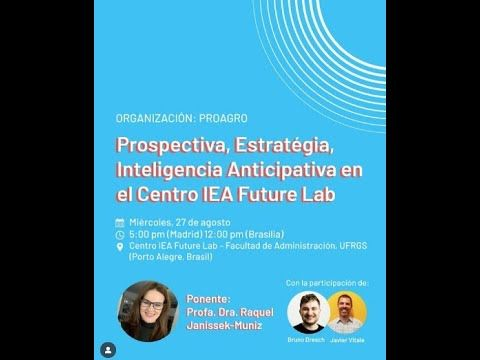
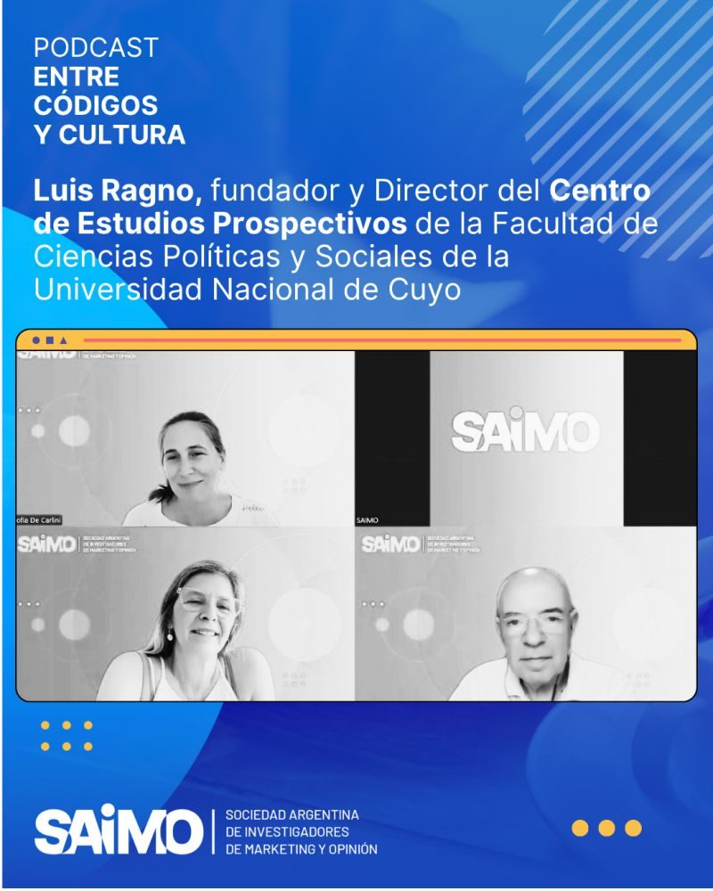
Nuevo episodio del podcast “Entre Códigos y Cultura” con Luis Ragno. #Prospectiva
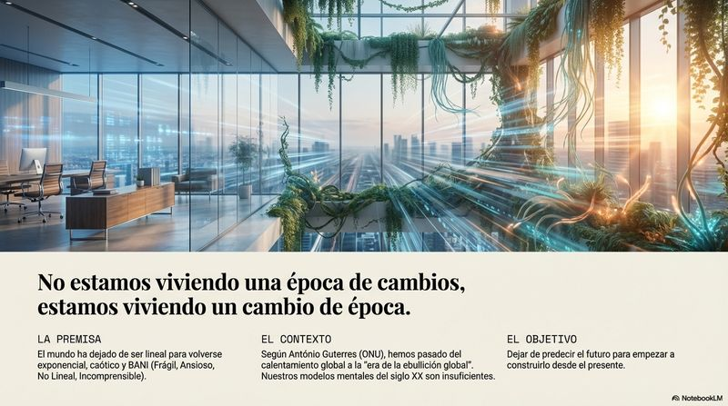
No estamos viviendo una época de cambios, sino un cambio de época. #Futuros
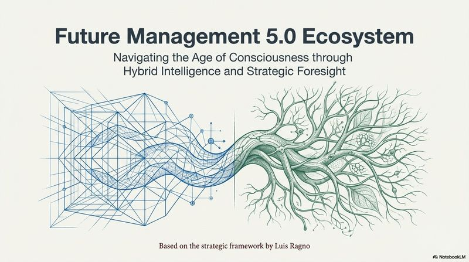
Future Management 5.0: gestión estratégica anticipatoria para la nueva humanidad.
Acompañamos a organizaciones, gobiernos e instituciones a anticipar riesgos y diseñar estrategias robustas frente a la incertidumbre.
Formamos parte e integramos redes internacionales de estudios de futuros.
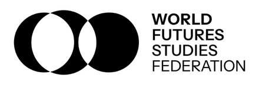
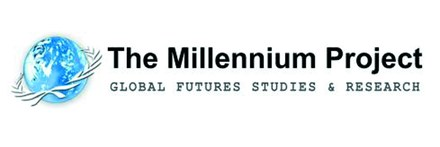
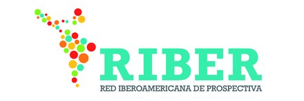
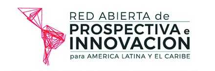
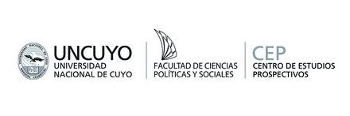
El contenido más reciente es exclusivo para socios; a los 6 meses se libera al público con registro. Elegí el nivel que acompaña tu recorrido.
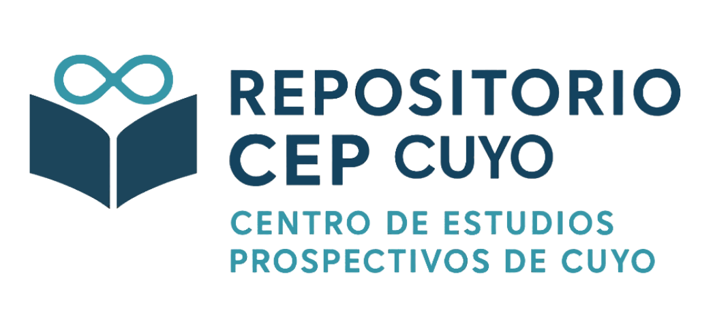
Artículos recientes, papers de vanguardia, bases de datos vivas y acceso directo a autores.
Publicaciones de 6 meses o más, en abierto. Requiere suscripción al newsletter “El Radar CEP”.
$—/mes
$—/mes
$—/mes
Prototipo · la suscripción y los pagos (Mercado Pago + Stripe) se habilitan en una fase posterior.
Entrevistas a fondo con referentes de prospectiva y futuros, más un plan editorial constante en todos los canales.
CEP Cuyo es una Asociación Civil con sede en Mendoza, continuadora del Centro de Estudios Prospectivos de la Facultad de Ciencias Políticas y Sociales de la UNCUYO. Está presidido por Luis Ragno —MBA (Usach), Licenciado en Filosofía (UNCUYO) y fundador del centro original—, con más de 40 años de experiencia internacional en recursos humanos y prospectiva estratégica.
El equipo reúne referentes como Javier Vitale, investigador del INTA y miembro del Comité Ejecutivo de la WFSF, y Silvina Papagno, especialista en prospectiva territorial y bioeconomía.
Trabajar con nosotros